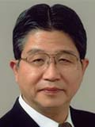

The 22nd China-Japan Bilateral Symposium on Intelligent Electrophotonic Materials and Molecular Electronics
SIEMME 2016, also the 22nd China-Japan Bilateral Symposium on Intelligent Electrophotonic Materials and Molecular Electronics, is about to be held at the Hotel of Element Suzhou Science and Technology Town (Element Hotel) in Suzhou city on September 22-24, 2016. Southeast University (China) and Tokyo University of Science (Japan) will organize the symposium together. Over 200 attendees from 36 academic or industrical affiliations will spread their new ideas on 3 topic sections with 5 plenary talks, 36 invited talks, 50 oral talks and 100 posters.
|  | Akira Fujishima. Recent Progress in Photocatalysis International Research Center. |
| Lei Jiang. Smart Interfacial Materials from Super-Wettability to Binary Cooperative Complementary Systems. | |
| Kazuhiro Hashimoto. Challenges/Priorities in Japan around Advanced Materials Science and Engineering. | |
| Yanling Song. Nanomaterial green printing based on surface wettability manipulation. | |
| Kam W. Leong. Place the report title here. |
st=>start: Opening address [08:30-08:45]
e=>end: Banquet [18:30]
op1=>operation: Plenary talk [08:45-11:45]
op2=>operation: Lunch [11:45-13:00]
op3=>operation: Invited & Oral talks (sections A, B, C) [13:00-17:26]
st->op1->op2->op3->e